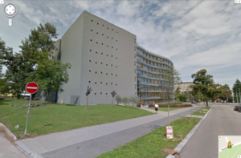

Playing with LASER Tag 2.0
From base48
Contents
What?
Combine laptop, projector, webcam and laser pointer into virtual graffiti.

Why?
To celebrate another fruitful year's end.
Tools
Available
- Acer P1303 projector
- speedlink webcamera (needs to get to run under linux)
- creative webcam
- T42 laptop
- red laser pointer mouse
- transportation means: Martian742's bike trailer
{kind=link}
Needed
- power source (our projector draws 2.3A @ 230V peak and 300W avg.)
- place for the performance
- what about the Moravian Library? the wall looks usable and it's not too far from base

- what about the Moravian Library? the wall looks usable and it's not too far from base
- faster computer
- green laser pointer(s) - User:b42 will borrow a pair from friend
{kind=link}
How?
Plan
- find stuff needed
- make the speedlink camera to work
- read the configuration suggestions [1]
- try different computers and settings
Resources
- Graffiti Research Lab Vienna
- Laser Tag Linux port home wiki
- ReadMe on the Linux port of the software
- Link to the Mac binaries
- Link to the Windows (XP, Mac) binaries
Conclusion
The peformance failed due to inadequate power supply from the generator (why?).
Lessons learned
- Obtain more reliable generator, or less reliable one with UPS, next time. Test whether it can power the whole setup for an extended period of time.
- The bike trailer is great for transporting all the things (+a crate of beer) needed without a car and doubles as a projector stand.
- USB-powered laser?
- There was an ambition to rewrite the lasertagging program using OpenCV.
Images
After the action.